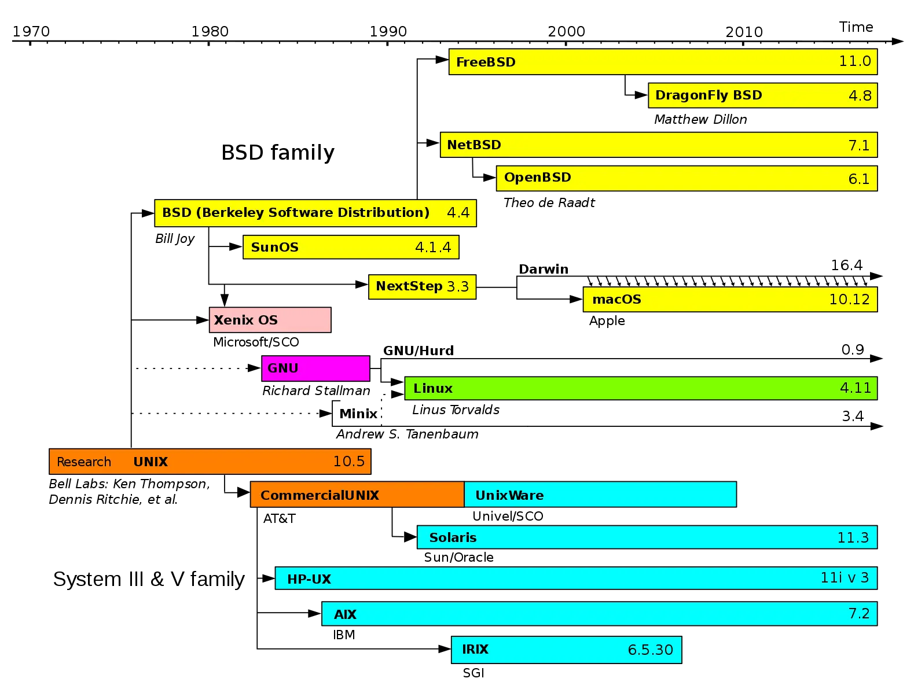
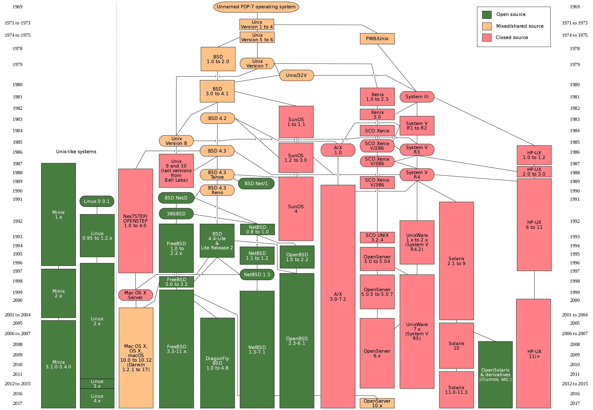
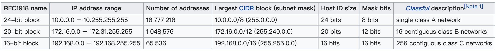
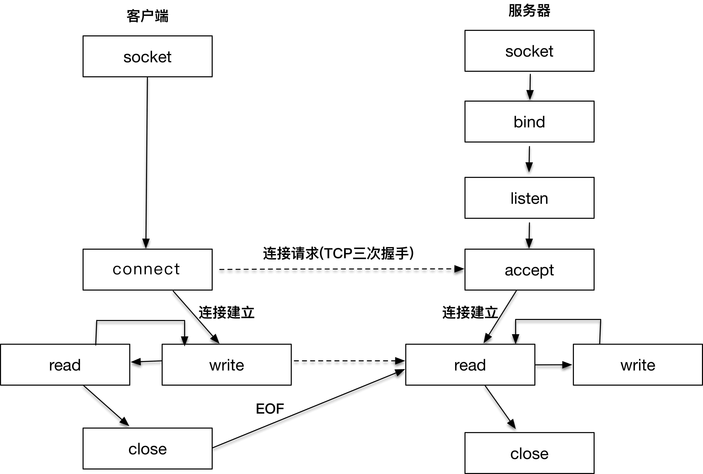
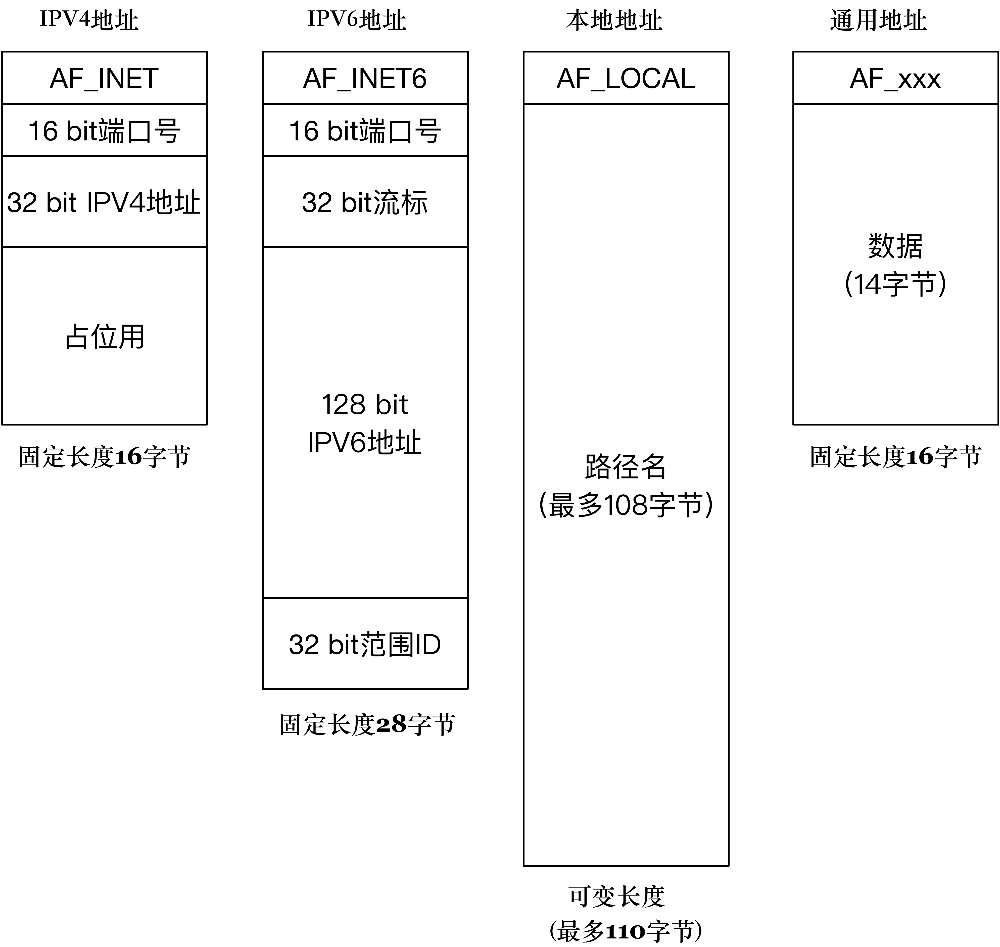
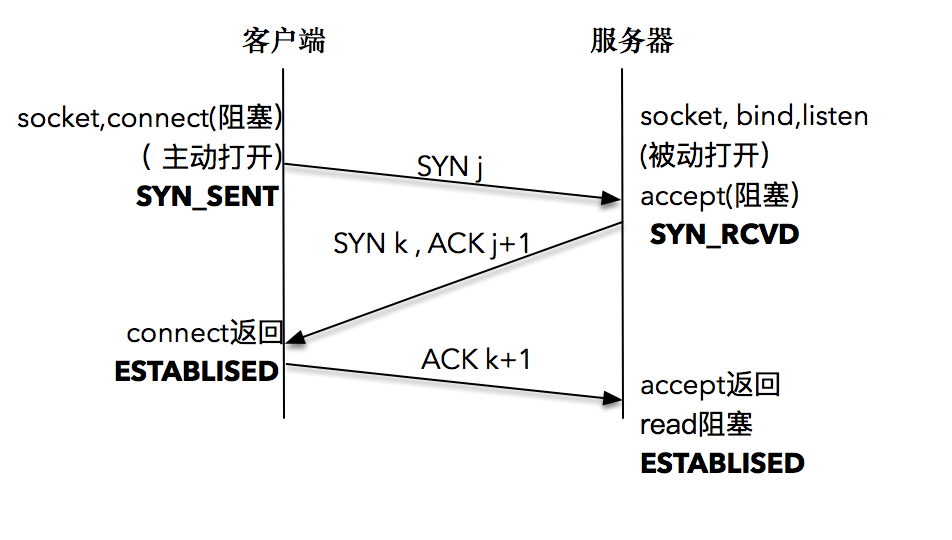

目录
网络编程实战¶
目录
学习高性能网络编程，掌握两个核心要点就可以了:
1. 理解网络协议，并在这个基础上和操作系统内核配合，感知各种网络 I/O 事件；
2. 学会使用线程处理并发。
追古溯源¶
互联网起源于阿帕网（ARPANET）
1972 年，网络控制协议（Network Control Protocol，缩写 NCP
1974 年，NCP 的开发者温特・瑟夫（Vinton Cerf）和罗伯特・卡恩（Robert E. Kahn）一起开发了一个阿帕网的下一代协议，发表了以分组、序列化、流量控制、超时和容错等为核心的一种新型的网络互联协议，一举奠定了 TCP/IP 协议的基础。
1984 年，ISO 组织发布了OSI 参考模型标准

UNIX 操作系统几十年的发展历史。¶
图上标示的 Research 橘黄色部分，是由 AT&T 贝尔实验室不断开发的 UNIX 研究版本，从此引出 UNIX 分时系统第 8 版、第 9 版，终止于 1990 年的第 10 版（10.5）。
最上面所标识的操作系统版本，是加州大学伯克利分校（BSD）研究出的分支，从此引出 4.xBSD 实现，以及后面的各种 BSD 版本。这个可以看做是学院派。在历史上，学院派有力地推动了 UNIX 的发展，包括我们后面会谈到的 socket 套接字都是出自此派。
最下面的那一个部分，是从 AT&T 分支的商业派，致力于从 UNIX 系统中谋取商业利润。从此引出了 System III 和 System V（被称为 UNIX 的商用版本），还有各大公司的 UNIX 商业版。

UNIX 的历史¶
UNIX 玩家:
1. SVR4（UNIX System V Release 4）是 AT&T 的 UNIX 系统实验室的一个商业产品。它基本上是一个操作系统的大杂烩，这个操作系统之所以重要，是因为它是 System III/V 分支各家商业化 UNIX 操作系统的 “先祖”，包括 IBM 的 AIX、HP 的 HP-UX、SGI 的 IRIX、Sun（后被 Oracle 收购）的 Solaris 等等
2. Solaris 是由 Sun Microsystems（现为 Oracle）开发的 UNIX 系统版本，它基于 SVR4，并且在商业上获得了不俗的成绩。2005 年，Sun Microsystems 开源了 Solaris 操作系统的大部分源代码，作为 OpenSolaris 开放源代码操作系统的一部分。相对于 Linux，这个开源操作系统的进展比较一般。
3. BSD（Berkeley Software Distribution），我们上面已经介绍过了，是由加州大学伯克利分校的计算机系统研究组（CSRG）研究开发和分发的。4.2BSD 于 1983 年问世，其中就包括了网络编程套接口相关的设计和实现，4.3BSD 则于 1986 年发布，正是由于 TCP/IP 和 BSD 操作系统的完美拍档，才有了 TCP/IP 逐渐成为事实标准的这一历史进程。
4. macOS X系统又被称为 Darwin，它已被验证过就是一个 UNIX 操作系统。如果打开 Mac 系统的 socket.h 头文件定义，你会明显看到 macOS 系统和 BSD 千丝万缕的联系，说明这就是从 BSD 系统中移植到 macOS 系统来的。
5. Linux 操作系统实在太重要了，全世界绝大部分数据中心操作系统都是跑在 Linux 上的，就连手机操作系统 Android，也是一个被 “裁剪” 过的 Linux 操作系统。
6. POSIX 标准相当于给大厦画好了图纸。程序在 macOS 和 Linux 可以兼容运行的原因，因为大家用的都是一张图纸，只不过制造商不同，程序当然可以兼容运行了。
7. Minix 操作系统，安迪・塔能鲍姆（Andy Tanenbaum）的教授开发的。Linux 早期从 Minix 中借鉴了一些思路，包括最早的文件系统等。
8. GNU，理查・斯托曼（Richard Stallman）设计一个完全自由的软件系统，用户可以自由使用，自由修改这些软件系统。
操作系统对 TCP/IP 的支持¶
网络编程模型¶

三个保留网段¶
TCP，字节流套接字（Stream Socket），SOCK_STREAM
UDP，数据报套接字（Datagram Socket），SOCK_DGRAM

网络编程中，客户端和服务器工作的核心逻辑。¶
Note
数据传输过程：客户端进程向操作系统内核发起 write 字节流写操作，内核协议栈将字节流通过网络设备传输到服务器端，服务器端从内核得到信息，将字节流从内核读入到进程中，并开始业务逻辑的处理
Note
【Socket 历史】socket 是加州大学伯克利分校的研究人员在 20 世纪 80 年代早期提出的，所以也被叫做伯克利套接字。伯克利的研究者们设想用 socket 的概念，屏蔽掉底层协议栈的差别。第一版实现 socket 的就是 TCP/IP 协议，最早是在 BSD 4.2 Unix 内核上实现了 socket。很快大家就发现这么一个概念带来了网络编程的便利，于是有更多人也接触到了 socket 的概念。Linux 作为 Unix 系统的一个开源实现，很早就从头开发实现了 TCP/IP 协议，伴随着 socket 的成功，Windows 也引入了 socket 的概念。于是在今天的世界里，socket 成为网络互联互通的标准。
套接字的通用地址结构:
/* POSIX.1g 规范规定了地址族为 2 字节的值. */
typedef unsigned short int sa_family_t;
/* 描述通用套接字地址 */
struct sockaddr{
sa_family_t sa_family; /* 地址族. 16-bit=2字节*/
char sa_data[14]; /* 具体的地址值 112-bit=14字节*/
};
「地址族」在 glibc 里的定义非常多，常用的有以下几种:
1. AF_LOCAL：表示的是本地地址，对应的是 Unix 套接字，这种情况一般用于本地 socket 通信，很多情况下也可以写成 AF_UNIX、AF_FILE；
2. AF_INET：因特网使用的 IPv4 地址；
3. AF_INET6：因特网使用的 IPv6 地址。
AF_表示的含义是 Address FamilyPF_表示的含义是 Protocol Family这两个值本身就是一一对应的
SYN：建立连接
FIN：关闭连接
ACK：响应
PSH：有 DATA 数据传输
RST：连接重置
常用的 IPv4 地址族的结构:
/* IPV4 套接字地址，32bit 值. */
typedef uint32_t in_addr_t;
struct in_addr
{
in_addr_t s_addr;
};
/* 描述 IPV4 的套接字地址格式 */
struct sockaddr_in
{
sa_family_t sin_family; /* 16-bit */
in_port_t sin_port; /* 端口号 16-bit*/
struct in_addr sin_addr; /* Internet address. 32-bit */
/* 这里仅仅用作占位符，不做实际用处 */
unsigned char sin_zero[8];
};
glibc 定义的保留端口:
/* Standard well-known ports. */
enum
{
IPPORT_ECHO = 7, /* Echo service. */
IPPORT_DISCARD = 9, /* Discard transmissions service. */
IPPORT_SYSTAT = 11, /* System status service. */
IPPORT_DAYTIME = 13, /* Time of day service. */
IPPORT_NETSTAT = 15, /* Network status service. */
IPPORT_FTP = 21, /* File Transfer Protocol. */
IPPORT_TELNET = 23, /* Telnet protocol. */
IPPORT_SMTP = 25, /* Simple Mail Transfer Protocol. */
IPPORT_TIMESERVER = 37, /* Timeserver service. */
IPPORT_NAMESERVER = 42, /* Domain Name Service. */
IPPORT_WHOIS = 43, /* Internet Whois service. */
IPPORT_MTP = 57,
IPPORT_TFTP = 69, /* Trivial File Transfer Protocol. */
IPPORT_RJE = 77,
IPPORT_FINGER = 79, /* Finger service. */
IPPORT_TTYLINK = 87,
IPPORT_SUPDUP = 95, /* SUPDUP protocol. */
IPPORT_EXECSERVER = 512, /* execd service. */
IPPORT_LOGINSERVER = 513, /* rlogind service. */
IPPORT_CMDSERVER = 514,
IPPORT_EFSSERVER = 520,
/* UDP ports. */
IPPORT_BIFFUDP = 512,
IPPORT_WHOSERVER = 513,
IPPORT_ROUTESERVER = 520,
/* Ports less than this value are reserved for privileged processes. */
IPPORT_RESERVED = 1024,
/* Ports greater this value are reserved for (non-privileged) servers. */
IPPORT_USERRESERVED = 5000
}
IPv6 的地址结构:
struct sockaddr_in6
{
sa_family_t sin6_family; /* 16-bit */
in_port_t sin6_port; /* 传输端口号 # 16-bit */
uint32_t sin6_flowinfo; /* IPv6 流控信息 32-bit*/
struct in6_addr sin6_addr; /* IPv6 地址 128-bit */
uint32_t sin6_scope_id; /* IPv6 域 ID 32-bit */
};
本地进程间的通信 AF_LOCAL:
struct sockaddr_un {
unsigned short sun_family; /* 固定为 AF_LOCAL */
char sun_path[108]; /* 路径名 */
};

几种套接字地址格式比较¶
建立连接-三次握手¶
服务端准备连接的过程¶
一. 创建套接字:
int socket(int domain, int type, int protocol)
说明:
1. domain 就是指 PF_INET、PF_INET6 以及 PF_LOCAL 等
2. type 可用的值是：
SOCK_STREAM: 表示的是字节流，对应 TCP；
SOCK_DGRAM： 表示的是数据报，对应 UDP；
SOCK_RAW: 表示的是原始套接字
3. protocol 原本是用来指定通信协议的，但现在基本废弃。
因为协议已经通过前面两个参数指定完成。protocol 目前一般写成 0 即可
二. 调用 bind 函数把套接字和套接字地址绑定:
bind(int fd, sockaddr * addr, socklen_t len)
说明:
1. fd: 文件描述符，即前面的 socket 的返回值
2. addr: 地址格式(IPv4、IPv6 或者本地套接字格式)
3. len: 处理长度可变的结构(如 IPv4和 IPv6长度不同)
Note
注意到 bind 函数后面的第二个参数是通用地址格式 sockaddr * addr。这里有一个地方值得注意，那就是虽然接收的是通用地址格式，实际上传入的参数可能是 IPv4、IPv6 或者本地套接字格式。bind 函数会根据 len 字段判断传入的参数 addr 该怎么解析，len 字段表示的就是传入的地址长度，它是一个可变值。这里其实可以把 bind 函数理解成这样： bind(int fd, void * addr, socklen_t len) BSD 设计套接字的时候大约是 1982 年，那个时候的 C 语言还没有 void * 的支持，为了解决这个问题，BSD 的设计者们创造性地设计了通用地址格式来作为支持 bind 和 accept 等这些函数的参数。
示例:
#include <stdio.h>
#include <stdlib.h>
#include <sys/socket.h>
#include <netinet/in.h>
int make_socket (uint16_t port)
{
int sock;
struct sockaddr_in name;
/* 创建字节流类型的 IPV4 socket. */
sock = socket (PF_INET, SOCK_STREAM, 0);
if (sock < 0)
{
perror ("socket");
exit (EXIT_FAILURE);
}
/* 绑定到 port 和 ip. */
name.sin_family = AF_INET; /* IPV4 */
name.sin_port = htons (port); /* 指定端口 */
name.sin_addr.s_addr = htonl (INADDR_ANY); /* 通配地址 */
/* 把 IPV4 地址转换成通用地址格式，同时传递长度 */
if (bind (sock, (struct sockaddr *) &name, sizeof (name)) < 0)
{
perror ("bind");
exit (EXIT_FAILURE);
}
return sock
}
三. 通过 listen 函数，可以将原来的 “主动” 套接字转换为 “被动” 套接字:
告诉操作系统内核：“我这个套接字是用来等待用户请求的。”
当然，操作系统内核会为此做好接收用户请求的一切准备，比如完成连接队列。
int listen (int socketfd, int backlog)
1. socketdf 为套接字描述符
2. backlog，在 Linux 中表示已完成 (ESTABLISHED) 且未 accept 的队列大小，这个参数的大小决定了可以接收的并发数目
四. 把 accept 这个函数看成是操作系统内核和应用程序之间的桥梁:
int accept(int listensockfd, struct sockaddr *cliaddr, socklen_t *addrlen)
1. listensockfd 是套接字，可以叫它为 listen 套接字
2. cliaddr: 通过指针方式获取的客户端的地址
3. addrlen 告诉我们地址的大小
Note
要注意有两个套接字描述字，第一个是监听套接字描述字 listensockfd，它是作为输入参数存在的；第二个是返回的已连接套接字描述字。应用服务器完成了对这个客户的服务，就会关闭已连接套接字，这样就完成了 TCP 连接的释放。而监听套接字一直都处于 “监听” 状态，等待新的客户请求到达并服务。
客户端发起连接的过程¶
一. 建立一个套接字 二. 通过 connect 函数完成客户端和服务器端的连接建立:
int connect(int sockfd, const struct sockaddr *servaddr, socklen_t addrlen)
1. 连接套接字
2. 套接字地址结构的指针(包含ip+port)
3. 该结构的大小
Note
如果是 TCP 套接字，那么调用 connect 函数将激发 TCP 的三次握手过程，而且仅在连接建立成功或出错时才返回。
出错返回可能有以下几种情况:
1. 三次握手无法建立，客户端发出的 SYN 包没有任何响应，于是返回 TIMEOUT 错误。这种情况比较常见的原因是对应的服务端 IP 写错。
2. 客户端收到了 RST（复位）回答，这时候客户端会立即返回 CONNECTION REFUSED 错误。这种情况比较常见于客户端发送连接请求时的请求端口写错，因为 RST 是 TCP 在发生错误时发送的一种 TCP 分节。产生 RST 的三个条件是：目的地为某端口的 SYN 到达，然而该端口上没有正在监听的服务器（如前所述）；TCP 想取消一个已有连接；TCP 接收到一个根本不存在的连接上的分节。
3. 客户发出的 SYN 包在网络上引起了 "destination unreachable"，即目的不可达的错误。这种情况比较常见的原因是客户端和服务器端路由不通。

著名的 TCP 三次握手¶
三次握手的具体过程:
1. 客户端的协议栈向服务器端发送了 SYN 包，并告诉服务器端当前发送序列号 j，客户端进入 SYNC_SENT 状态；
2. 服务器端的协议栈收到这个包之后，和客户端进行 ACK 应答，应答的值为 j+1，表示对 SYN 包 j 的确认，同时服务器也发送一个 SYN 包，告诉客户端当前我的发送序列号为 k，服务器端进入 SYNC_RCVD 状态；
3. 客户端协议栈收到 ACK 之后，使得应用程序从 connect 调用返回，表示客户端到服务器端的单向连接建立成功，客户端的状态为 ESTABLISHED，同时客户端协议栈也会对服务器端的 SYN 包进行应答，应答数据为 k+1；
4. 应答包到达服务器端后，服务器端协议栈使得 accept 阻塞调用返回，这个时候服务器端到客户端的单向连接也建立成功，服务器端也进入 ESTABLISHED 状态。